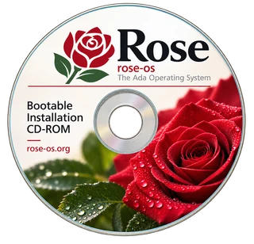

<title>Rose OS</title>
<meta name="claude:viewport-fit-sides" content="cover">
<meta name="description" content="Rose is a persistent, capability-based operating system written in Ada.">
<link rel="icon" href="favicon.svg" type="image/svg+xml">
<link rel="apple-touch-icon" href="apple-touch-icon.png">
<link rel="preconnect" href="https://fonts.googleapis.com">
<link rel="preconnect" href="https://fonts.gstatic.com" crossorigin>
<link rel="stylesheet" href="https://fonts.googleapis.com/css2?family=Cormorant+Garamond:ital,wght@0,500;0,600;1,500&family=IBM+Plex+Mono:wght@400;500&family=IBM+Plex+Sans:wght@400;500;600&display=swap">
<style>
/* Layout: a botanical specimen plate beside the thesis, then a technical
   manual below it; the rose's crimson is the only loud colour. */
:root {
  --paper: #f5f6f3;
  --ink: #1a1e1b;
  --muted: #59625b;
  --rule: #d5dad3;
  --rose: #a3121f;
  --stem: #2e6a3a;
  --plate: #ffffff;
  --plate-ink: #1a1e1b;
  --plate-rule: #d5dad3;
  --plate-rose: #a3121f;
  --plate-stem: #2e6a3a;
  --field: #ffffff;
  --field-tint: #fbeff0;

  --display: "Cormorant Garamond", "Iowan Old Style", "Palatino Linotype", Palatino, Georgia, serif;
  --body: "IBM Plex Sans", "Segoe UI", system-ui, -apple-system, sans-serif;
  --mono: "IBM Plex Mono", ui-monospace, "SFMono-Regular", Consolas, monospace;

  --step-0: 1rem;
  --step-1: 1.25rem;
  --step-2: 1.75rem;
  --step-3: 2.5rem;
  --step-4: clamp(4rem, 12vw, 7.5rem);
}
@media (prefers-color-scheme: dark) {
  :root:not([data-theme="light"]) {
    --paper: #111412;
    --ink: #e8ebe7;
    --muted: #9ba49d;
    --rule: #2b312c;
    --rose: #e8606a;
    --stem: #82c08d;
    --plate: #eceeeb;
    --field: #181c19;
    --field-tint: #2a1a1c;
    color-scheme: dark;
  }
}
:root[data-theme="dark"] {
  --paper: #111412;
  --ink: #e8ebe7;
  --muted: #9ba49d;
  --rule: #2b312c;
  --rose: #e8606a;
  --stem: #82c08d;
  --plate: #eceeeb;
  --field: #181c19;
  --field-tint: #2a1a1c;
  color-scheme: dark;
}

body {
  margin: 0;
  background: var(--paper);
  color: var(--ink);
  font-family: var(--body);
  font-size: var(--step-0);
  line-height: 1.6;
  padding-left: max(16px, env(safe-area-inset-left, 0px));
  padding-right: max(16px, env(safe-area-inset-right, 0px));
}

.page {
  max-width: 1080px;
  margin: 0 auto;
  display: grid;
  gap: 5rem;
  padding-block: 3rem 4rem;
}

a { color: var(--rose); text-underline-offset: 0.18em; }
a:focus-visible, .button:focus-visible { outline: 2px solid var(--rose); outline-offset: 3px; }

h1, h2 { font-family: var(--display); font-weight: 600; text-wrap: balance; margin: 0; }
h2 { font-size: var(--step-3); line-height: 1.1; }
h3 { font-size: var(--step-0); font-weight: 600; margin: 0; }
p { margin: 0; }

.label {
  font-family: var(--mono);
  font-size: 0.75rem;
  letter-spacing: 0.08em;
  text-transform: uppercase;
  color: var(--muted);
}

/* Hero */
.hero {
  display: grid;
  grid-template-columns: minmax(0, 1.15fr) minmax(0, 0.85fr);
  gap: 3.5rem;
  align-items: center;
}
.hero-text { display: grid; gap: 1.5rem; min-width: 0; }
.hero h1 {
  font-size: var(--step-4);
  font-style: italic;
  font-weight: 500;
  line-height: 0.9;
  letter-spacing: -0.01em;
  color: var(--rose);
}
.tagline {
  font-family: var(--display);
  font-size: var(--step-2);
  line-height: 1.2;
  max-width: 22ch;
}
.lead { max-width: 58ch; color: var(--ink); }
.actions { display: flex; flex-wrap: wrap; gap: 0.75rem; padding-top: 0.5rem; }
.button {
  display: inline-flex;
  align-items: baseline;
  gap: 0.5em;
  padding: 0.7rem 1.1rem;
  border: 1px solid var(--rule);
  border-radius: 2px;
  color: var(--ink);
  text-decoration: none;
  font-weight: 500;
  transition: border-color 0.15s, color 0.15s;
}
.button:hover { border-color: var(--rose); color: var(--rose); }
.button.primary { background: var(--rose); border-color: var(--rose); color: var(--paper); }
.button.primary:hover { filter: brightness(1.08); color: var(--paper); }
.button small { font-family: var(--mono); font-size: 0.75rem; opacity: 0.75; }
.disc {
  display: flex;
  align-items: center;
  gap: 1rem;
  width: fit-content;
  color: var(--muted);
  font-size: 0.9rem;
  text-decoration: none;
}
.disc img { display: block; width: 8rem; height: auto; flex: none; }
.disc small { font-family: var(--mono); font-size: 0.75rem; opacity: 0.75; }
.disc:hover { color: var(--rose); }
.disc:hover img { filter: brightness(1.04); }

/* Specimen plate */
.plate {
  margin: 0;
  background: var(--plate);
  border: 1px solid var(--rule);
  padding: 1rem 1rem 0;
  display: grid;
  gap: 0;
  max-width: 420px;
  justify-self: end;
  width: 100%;
}
.plate img { display: block; width: 100%; height: auto; aspect-ratio: 3 / 4; object-fit: cover; }
.specimen {
  margin: 0 -1rem;
  padding: 0.9rem 1rem 1rem;
  border-top: 1px solid var(--plate-rule);
  background: var(--plate);
  color: var(--plate-ink);
  display: grid;
  grid-template-columns: auto 1fr;
  gap: 0.2rem 1rem;
  font-family: var(--mono);
  font-size: 0.78rem;
}
.specimen dt { text-transform: uppercase; letter-spacing: 0.08em; color: var(--plate-stem); }
.specimen dd { margin: 0; }
.specimen .title { grid-column: 1 / -1; font-family: var(--display); font-style: italic; font-size: 1.15rem; color: var(--plate-rose); padding-bottom: 0.3rem; }

/* Ideas */
.ideas-head { display: grid; gap: 0.75rem; max-width: 60ch; }
.ideas {
  display: grid;
  grid-template-columns: repeat(3, minmax(0, 1fr));
  gap: 2.5rem;
  border-top: 1px solid var(--rule);
  padding-top: 2rem;
}
.idea { display: grid; gap: 0.6rem; align-content: start; min-width: 0; }
.idea h3 { font-family: var(--display); font-size: var(--step-2); font-weight: 600; line-height: 1.1; }
.idea p { color: var(--ink); }
.idea .label { color: var(--stem); }
section { display: grid; gap: 2rem; }

/* Status */
.status {
  display: grid;
  grid-template-columns: minmax(0, 1fr) minmax(0, 1fr);
  gap: 2.5rem 3rem;
  align-items: start;
}
.status blockquote { grid-column: 1 / -1; max-width: 46rem; }
blockquote {
  margin: 0;
  font-family: var(--display);
  font-size: var(--step-2);
  font-style: italic;
  line-height: 1.25;
  border-left: 2px solid var(--rose);
  padding-left: 1.25rem;
  display: grid;
  gap: 0.75rem;
}
blockquote cite { font-family: var(--mono); font-style: normal; font-size: 0.75rem; color: var(--muted); letter-spacing: 0.06em; text-transform: uppercase; }
.work { display: grid; gap: 1rem; min-width: 0; }
.work ul { list-style: none; margin: 0; padding: 0; display: grid; gap: 0.8rem; }
.work li { display: grid; grid-template-columns: 4.5rem 1fr; gap: 0.75rem; border-top: 1px solid var(--rule); padding-top: 0.8rem; }
.work li a.issue { font-family: var(--mono); font-size: 0.85rem; text-decoration: none; }
.work ul.projects li { grid-template-columns: 1fr; gap: 0.2rem; }
.work li a.project { font-weight: 600; text-decoration: none; }
.work li a.project + span:empty { display: none; }
.work code { font-family: var(--mono); font-size: 0.9em; }

.merged-block { display: grid; gap: 1rem; }
.merged-head { display: flex; flex-wrap: wrap; justify-content: space-between; align-items: baseline; gap: 0.5rem 1.5rem; }
.merged-head .updated { font-family: var(--mono); font-size: 0.75rem; color: var(--muted); }
.merged { list-style: none; margin: 0; padding: 0; display: grid; }
.merged li {
  display: grid;
  grid-template-columns: 7.5rem 4.5rem minmax(0, 1fr);
  gap: 0.75rem;
  align-items: baseline;
  border-top: 1px solid var(--rule);
  padding-block: 0.7rem;
}
.merged li:last-child { border-bottom: 1px solid var(--rule); }
.merged time { font-family: var(--mono); font-size: 0.8rem; color: var(--muted); font-variant-numeric: tabular-nums; }
.merged a { font-family: var(--mono); font-size: 0.85rem; text-decoration: none; }
.merged span { min-width: 0; overflow-wrap: anywhere; }
@media (max-width: 560px) {
  .merged li { grid-template-columns: 4.5rem minmax(0, 1fr); gap: 0.2rem 0.75rem; }
  .merged time { grid-column: 1 / -1; }
}

footer {
  border-top: 1px solid var(--rule);
  padding-top: 1.5rem;
  display: flex;
  flex-wrap: wrap;
  justify-content: space-between;
  gap: 1rem;
  color: var(--muted);
  font-size: 0.9rem;
}

@media (max-width: 820px) {
  .hero { grid-template-columns: 1fr; gap: 2.5rem; }
  .plate { justify-self: start; }
  .ideas { grid-template-columns: 1fr; gap: 2rem; }
  .status { grid-template-columns: 1fr; }
  .page { gap: 4rem; padding-block: 2rem 3rem; }
}
@media (prefers-reduced-motion: no-preference) {
  .hero h1 { animation: bloom 0.9s ease-out both; }
  .plate { animation: settle 1.1s 0.15s ease-out both; }
  @keyframes bloom { from { opacity: 0.4; letter-spacing: 0.06em; } to { opacity: 1; letter-spacing: -0.01em; } }
  @keyframes settle { from { opacity: 0.6; transform: translateY(8px); } to { opacity: 1; transform: none; } }
}
</style>

<main class="page">

  <header class="hero">
    <div class="hero-text">
      <p class="label">Persistent · Capability-based · Written in Ada</p>
      <h1>Rose</h1>
      <p class="tagline">An operating system where holding a capability is the only way to do anything.</p>
      <p class="lead">
        Rose is a small kernel and a set of user-space servers.
        Every process acts only through the capabilities it holds, and the system is built to keep its state across restarts.
        It runs on i686 under QEMU, boots to the Petal shell, comes back from its last checkpoint when restarted, and is very much a work in progress.
      </p>
      <div class="actions">
        <a class="button primary" href="/rose-book/">Read the Rose Book</a>
        <a class="button" href="/rose-book/rose-book.pdf">Rose Book PDF</a>
        <a class="button" href="/rose-book/rose-book.epub">Rose Book EPUB</a>
        <a class="button" href="https://github.com/blancolioni/rose">Source on GitHub</a>
      </div>
      <a class="disc" href="/rose.iso">
        
        <span>Download the installation CD image <small><!-- isoversion:start --><!-- isoversion:end --><!-- isosize:start -->34 MB<!-- isosize:end --></small></span>
      </a>
    </div>

    <figure class="plate">
      
      <dl class="specimen">
        <dd class="title">Rose</dd>
        <dt>Kind</dt><dd>Persistent, capability-based OS</dd>
        <dt>Language</dt><dd>Ada</dd>
        <dt>Hardware</dt><dd>i686, under QEMU</dd>
        <dt>Since</dt><dd>16 November 2018</dd>
        <dt>Licence</dt><dd>GNU GPL v3</dd>
      </dl>
    </figure>
  </header>

  <section aria-labelledby="ideas-title">
    <div class="ideas-head">
      <p class="label">How it works</p>
      <h2 id="ideas-title">Three ideas</h2>
    </div>
    <div class="ideas">
      <article class="idea">
        <p class="label">Authority</p>
        <h3>Capabilities</h3>
        <p>
          A process can do only what its capabilities allow, and holding one is all it needs.
          To the process a capability is just a 32-bit word.
          The kernel uses it to find a structure that names an object and the rights the holder has over it.
          There is no global namespace to go looking in.
        </p>
      </article>
      <article class="idea">
        <p class="label">State</p>
        <h3>Persistence</h3>
        <p>
          Rose is designed to keep running across restarts.
          Every 30 seconds a checkpoint saves the kernel's tables and every changed page to a log on disk.
          At the next boot, a restore brings back every persistent process as it was at the last checkpoint, with the capabilities it held and the screen it had drawn.
        </p>
      </article>
      <article class="idea">
        <p class="label">Contracts</p>
        <h3>Interfaces</h3>
        <p>
          Every interface between processes is declared in an interface definition language that reads like an Ada package spec.
          The IDL compiler, <a href="https://github.com/blancolioni/idle">idle</a>, generates the Ada client and server packages from it, so both sides of a call agree by construction.
        </p>
      </article>
    </div>
  </section>

  <section aria-labelledby="status-title">
    <div class="ideas-head">
      <p class="label">Where it stands</p>
      <h2 id="status-title">Status</h2>
    </div>
    <div class="status">
      <blockquote>
        <p>Rose boots, launches various services, and reformats the hard drive. It is therefore not what you would call ready for production.</p>
        <cite>The README</cite>
      </blockquote>
      <div class="work">
        <h3>Working now</h3>
        <ul>
          <li><a class="issue" href="https://github.com/blancolioni/rose/pull/502">#502</a><span>Logging users in at the console, with Petal as a command</span></li>
          <li><a class="issue" href="https://github.com/blancolioni/rose/pull/510">#510</a><span>Restarting and booting from the hard disk when the install finishes</span></li>
          <li><a class="issue" href="https://github.com/blancolioni/rose/pull/493">#493</a><span>A userland runtime, so servers can use Ada containers and run as ordinary processes</span></li>
          <li><a class="issue" href="https://github.com/blancolioni/rose/issues/518">#518</a><span>Saving banks in the checkpoint, so limits and charges survive a restore</span></li>
        </ul>
      </div>
      <div class="work">
        <h3>Current work</h3>
        <ul class="projects">
          <!-- projects:start --><!-- projects:end -->
        </ul>
      </div>
    </div>

    <div class="merged-block">
      <div class="merged-head">
        <h3>Recently merged</h3>
        <span class="updated"><!-- updated:start -->Not yet updated<!-- updated:end --></span>
      </div>
      <ol class="merged">
<!-- merged:start -->
<!-- merged:end -->
      </ol>
    </div>
  </section>

  <footer>
    <span>Rose is free software, under the GNU General Public License v3.</span>
    <span><a href="https://github.com/blancolioni/rose">github.com/blancolioni/rose</a></span>
  </footer>

</main>
